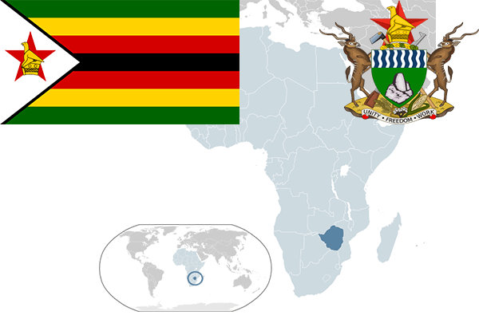

To`liq nomi: Zimbabve Respublikasi
Region: Janubiy Afrika
Qonunchilik shakli: Respublika
Mustaqillik kuni: 18 aprel 1980-yil
Poytaxt: Xarare
Maydoni: 390,757 km²
Chegaradosh davlatlari: JAR, Mozambik, Botsvana, Zambiya
Aholisi: 16 150 362 (2015-yil)
Aholi zichligi: 26 /км²
Aholining o`rtacha yoshi: 59,36 yil
Rasmiy tili: Ingliz tili
Dini: Xristian
Pul birligi: Zimbabve dollari
Telefon prefiksi: +263
Internet domen: .zw
Xalqaro tashkilotlarga a`zoligi: BMT
Dengiz va okeanlarga chiqishi: Yo’q
YIM: Butun: $14,3 mlrd.(2015-yil)
Yirik shaharlari: Xarare